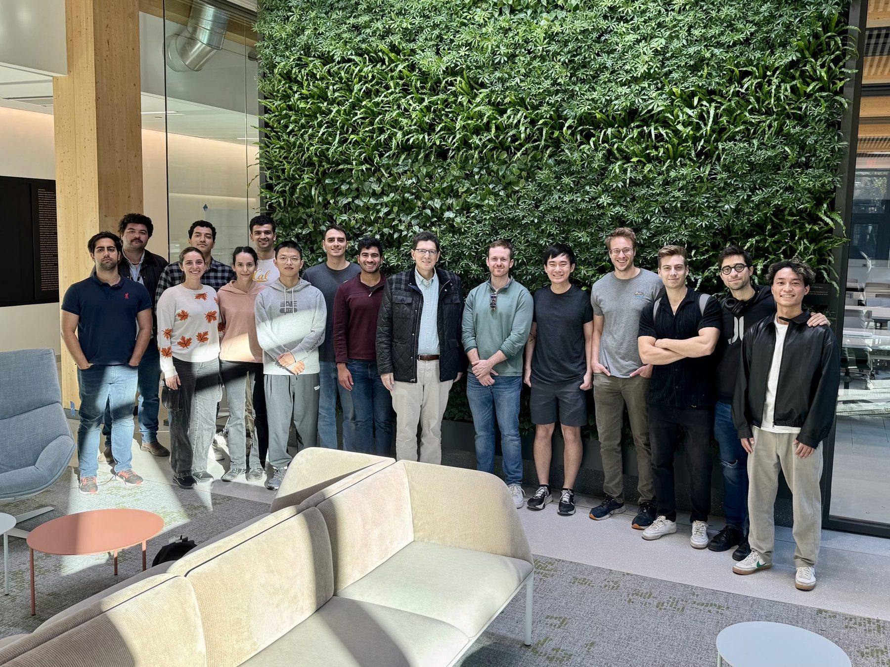
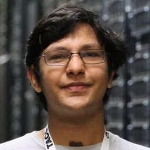
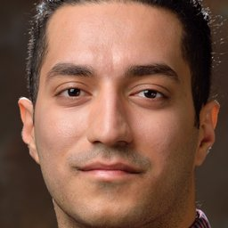
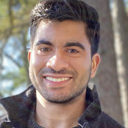
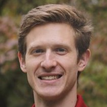
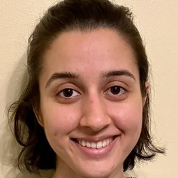
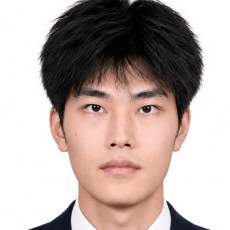
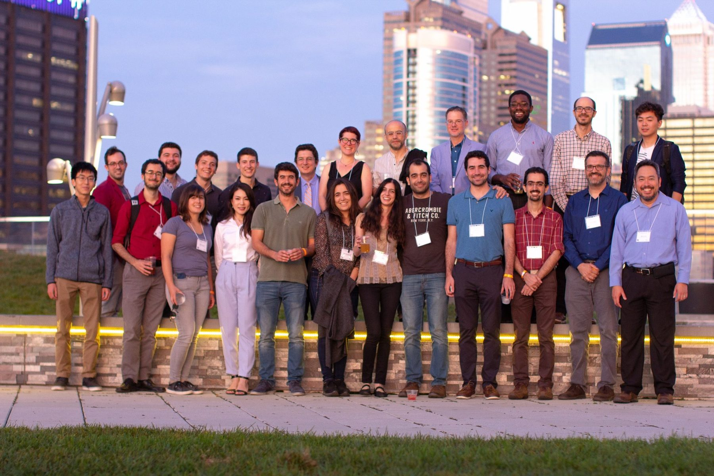

Research Group
Our research group consists of Ph.D. students and postdoctoral researchers in ESE, CIS and AMCS at Penn, and members of the GRASP Laboratory.
Current Members







Former Ph.D. Students and Postdocs

Faculty
Nikolay Atanasov
Ph.D. graduate student, ESE, September 2009–August 2015
Now Professor, ECE Department, University of California, San Diego, CA
Shun-ichi Azuma
Visiting Postdoctoral Scholar, ESE, April 2009–April 2010
Now Professor, Kyoto University, Kyoto, Japan
Thomas Beckers
Postdoctoral Researcher, ESE, January 2021–December 2022
Now Professor of Autonomous Systems, Ulm University, Germany
Philip Dames
Postdoctoral Researcher, ESE, September 2015–June 2016
Now Associate Professor, Mechanical Engineering, Temple University, Philadelphia, PA
Thao Dang
Postdoctoral Researcher, CIS, January 2001–December 2001
Now Directeur de Recherche at VERIMAG, CNRS, Grenoble, France
Alessandro D'Innocenzo
Postdoctoral Researcher, ESE, March 2008–December 2008
Now Associate Professor, Università di L'Aquila, Italy
Chinwendu Enyioha
Ph.D. graduate student, ESE, September 2008–December 2014
Now Associate Professor, ECE Department, University of Central Florida, Orlando, FL
Mahyar Fazlyab
Postdoctoral Researcher, ESE, August 2018–August 2020
Now Assistant Professor, ECE Department, Johns Hopkins University, MD
Konstantinos Gatsis
Ph.D. graduate student, ESE, September 2010–October 2019
Now Visiting Teaching Assistant Professor, ECE Department, Villanova University, PA
Antoine Girard
Postdoctoral Researcher, ESE, October 2004–December 2005
Now CNRS Directeur de Recherche, Laboratoire des Signaux et Systèmes, CentraleSupélec, France
Shuo Han
Postdoctoral Researcher, ESE, October 2013–July 2017
Now Associate Professor, ECE Department, University of Illinois Chicago, IL
Radoslav Ivanov
Postdoctoral Researcher, CIS, August 2017–December 2021
Now Assistant Professor, CS Department, Rensselaer Polytechnic Institute, Troy, NY
A. Agung Julius
Postdoctoral Researcher, ESE, June 2005–December 2008
Now Professor, ECSE Department, Rensselaer Polytechnic Institute, Troy, NY
Dionysios Kalogerias
Postdoctoral Researcher, ESE, June 2019–August 2020
Now Assistant Professor, EE Department, Yale University, CT
Ioannis Kantaros
Postdoctoral Researcher, CIS, August 2018–December 2021
Now Assistant Professor, ESE Department, Washington University in St. Louis, MO
Hadas Kress-Gazit
Ph.D. graduate student, ESE, September 2003–August 2008
Now Geoffrey S.M. Hedrick Sr. Professor, Mechanical and Aerospace Eng., Cornell University
Lars Lindemann
Postdoctoral Researcher, ESE, November 2020–December 2022
Now Assistant Professor, Automatic Control Laboratory, ETH Zurich, Switzerland
Fei Miao
Ph.D. graduate student, ESE, September 2010–May 2016
Now Qiushi Distinguished Professor, Control Science and Engineering, Zhejiang University
Aritra Mitra
Postdoctoral Researcher, ESE, August 2020–December 2022
Now Assistant Professor, ECE, North Carolina State University, NC
Truong Nghiem
Ph.D. graduate student, ESE, September 2005–September 2012
Now Associate Professor, ECE Department, University of Central Florida, Orlando, FL
Cameron Nowzari
Postdoctoral Researcher, ESE, October 2013–July 2016
Now Associate Professor, ECE Department, George Mason University, Fairfax, VA
Erfan Nozari
Postdoctoral Researcher, ESE, August 2019–June 2020
Now Assistant Professor, ME Department, University of California, Riverside, CA
Jerome Le Ny
Postdoctoral Researcher, ESE, September 2008–April 2012
Now Professor, Electrical Engineering, École Polytechnique de Montréal, Canada
Miroslav Pajic
Postdoctoral Researcher, ESE, September 2012–July 2015
Now Professor, ECE Department, Duke University, NC
Sergio Pequito
Postdoctoral Researcher, ESE, August 2014–July 2017
Now Associate Professor, Instituto Superior Técnico, University of Lisbon, Portugal
Indranil Saha
Postdoctoral Researcher, CIS, July 2013–August 2015
Now Professor and Soma and Manas Mandal Chair, CSE Department, IIT Kanpur, India
M. Selman Sakar
Ph.D. graduate student, ESE, September 2005–December 2010
Now Associate Professor at EPFL, Lausanne, Switzerland
Rajiv Sambharya
Postdoctoral Researcher, ESE, September 2024–July 2026
Now Assistant Professor, Texas A&M University, College Station, TX
Yasser Shoukry
Postdoctoral Researcher, ESE, September 2015–July 2017
Now Associate Professor, ECE, University of California, Irvine, CA
Igor Spasojevic
Postdoctoral Researcher, ESE, August 2022–June 2025
Now Assistant Professor, ECE Department, University of California, Riverside, CA
Shreyas Sundaram
Postdoctoral Researcher, ESE, September 2009–April 2010
Now Marie Gordon Professor, ECE, Purdue University, West Lafayette, IN
Paulo Tabuada
Postdoctoral Researcher, ESE, January 2002–August 2003
Now Professor and Vijay K. Dhir Chair in Engineering, ECE Department, UCLA
Herbert Tanner
Postdoctoral Researcher, ESE, June 2001–August 2003
Now Professor and Chair, Department of Mechanical Engineering, University of Delaware
Anastasios Tsiamis
Ph.D. graduate student, ESE, September 2015–March 2022
Now Assistant Professor, ECE Department, University of Patras, Greece
Vasileios Tzoumas
Ph.D. graduate student, ESE, September 2012–June 2018
Now Assistant Professor, Aerospace Department, University of Michigan, Ann Arbor, MI
Michael Zavlanos
Ph.D. graduate student, ESE, September 2003–August 2008
Now Professor, Mechanical Engineering and Materials Science, Duke University, NC
Research institutes and laboratories
Kong Yao Chee
Ph.D. graduate student, ESE, September 2019–December 2024
Now Senior Member of Technical Staff, DSO National Laboratories, Singapore
Matthew Cleaveland
Ph.D. graduate student, ESE, September 2018–May 2025
Now Technical Staff, MIT Lincoln Laboratory, Cambridge, MA
T. John Koo
Postdoctoral Researcher, EE, August 2000–January 2001
Now at LSCM R&D Centre, Hong Kong, China
Charis Stamouli
Ph.D. graduate student, ESE, September 2020–July 2026
Now Postdoctoral Researcher, ETH Zurich, Switzerland
Pedro Paulo Ventura Tecchio
Ph.D. graduate student, ESE, September 2013–July 2019
Now at Brazilian Institute of Robotics, Salvador, Brazil
Nicholas Watkins
Ph.D. graduate student, ESE, September 2013–December 2018
Now Senior Professional Staff, Johns Hopkins University Applied Physics Laboratory
Industry
Ali Ahmadzadeh
Ph.D. graduate student, ESE, September 2003–August 2008
Now Quantitative Strategist, Citadel Energy Marketing, CT
Andreea Alexandru
Ph.D. graduate student, ESE, September 2015–May 2021
Now Senior Scientist, Duality Technologies
Victor Amelkin
Postdoctoral Researcher, ESE, July 2018–June 2020
Now Research Scientist, Amazon Robotics
Mohamed Babaali
Postdoctoral Researcher, ESE, July 2004–May 2005
Now Principal Software Engineer at Mathworks, Boston, MA
Nikolaos Bousias
Ph.D. graduate student, ESE, September 2019–July 2026
Now at Ghost Robotics, Philadelphia, PA
Sean Bowman
Ph.D. graduate student, CIS, September 2012–December 2021
Now Lead Robotics Software Engineer, Exyn Technologies, Philadelphia, PA
Austin Chen
Ph.D. graduate student, CIS, September 2018–May 2025
Now Mission Autonomy Lead at HavocAI, San Diego, CA
Georgios Fainekos
Ph.D. graduate student, CIS, September 2002–August 2008
Now Senior Principal Scientist, Toyota Motor North America R&D
Heejin Chloe Jeong
Ph.D. graduate student, ESE, January 2016–May 2020
Now Staff Research Engineer, Waymo
Fragkiskos Koufogiannis
Ph.D. graduate student, ESE, September 2011–July 2017
Now at Tanius Technology
Matthew Malencia
Ph.D. graduate student, ESE, September 2018–May 2023
Now Senior Technical Project Manager, Exyn Technologies, Philadelphia, PA
Alexander Robey
Ph.D. graduate student, ESE, September 2018–2024
Now Member of Technical Staff, Thinking Machines Lab
Alena Rodionova
Ph.D. graduate student, ESE, September 2017–December 2022
Now Senior Software Engineer, Waabi, Boston, MA
Orlando Romero
Ph.D. graduate student, ESE, September 2020–May 2025
Now Senior Specialist, Data Science, Nasdaq Inc
Kelsey Saulnier
Ph.D. graduate student, ESE, September 2014–December 2022
Now Robotics Engineer, Pattern Labs
Brent Schlotfeldt
Ph.D. graduate student, ESE, September 2016–May 2021
Now Staff Software Engineer, Waymo
Jacob Seidman
Ph.D. graduate student, AMCS, September 2015–September 2022
Now Director of Applied AI, Reality Defender, New York, NY
Maria Elizabeth Tzes
Ph.D. graduate student, ESE, September 2018–May 2024
Now Applied Scientist II, Amazon Fulfillment Technologies and Robotics
Shuo Yang
Ph.D. graduate student, ESE, September 2022–December 2025
Now Quantitative Researcher, Point72
Ingvar Ziemann
Postdoctoral Scholar, ESE, March 2023–June 2025
Now at Xantium (Tudor Investment Corporation), New York, NY
Former Master’s Students
Haimin Hu
MSE Graduate Student, ESE, September 2018–May 2020
Now Assistant Professor, Computer Science, Johns Hopkins University, Baltimore, MD
Jingqi Li
MSE Graduate Student, ESE, September 2017–May 2019
Now Peter O’Donnell Jr. Postdoctoral Fellow, Oden Institute, UT Austin, TX
Saad Aleem
MSE Graduate Student, ESE, September 2014–May 2016
Now at Oracle, Redwood Shores, CA
Hakan Yazarel
MSE Graduate Student, ESE, September 2002–December 2005
Now Senior Principal Software Engineer at Carefusion, Orange County, CA
Selcuk Bayraktar
MSE Graduate Student, ESE, September 2002–September 2004
Now Chairman and CTO, Baykar, Istanbul, Turkey
Pradyumna K. Mishra
MSE Graduate Student, CIS, September 2000–December 2002
Now Co-Founder and CEO, Fingertips Lab, San Jose, CA
Join the Group
Prospective Ph.D. students apply through the ESE or CIS doctoral programs. Postdoctoral candidates can write with a CV and a short research statement.
For how I approach advising, see my essay “Mentor the Researcher, Not the Research” (Penn Almanac, 2017). This mentoring has been recognized with the IEEE Leon K. Kirchmayer Graduate Teaching Award and the Penn Provost’s Award for Distinguished Ph.D. Teaching and Mentoring.
Email George Pappas